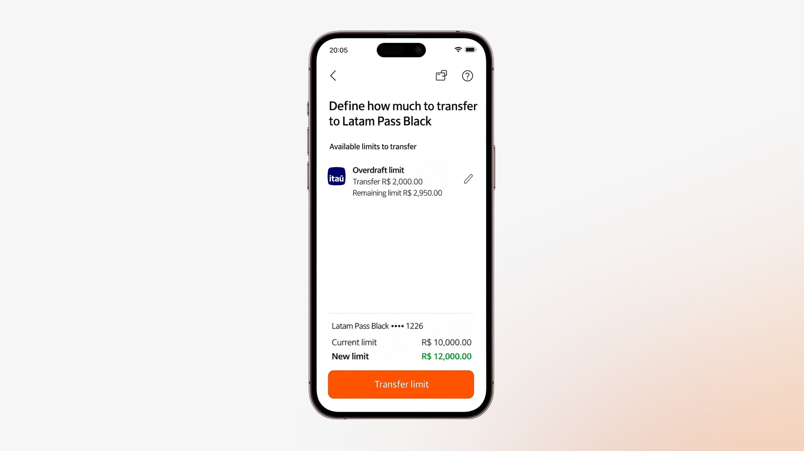

Show what remains
Each source shows the transfer amount and the remaining limit. Customers can see the trade-off before moving credit.
Itaú · Mobile banking
Your credit, where you need it.
Move available credit between cards and overdraft, with a clear view of what changes before you confirm.

A customer could have unused credit on one card and insufficient credit on another card or their overdraft. The total available amount did not reflect what they could actually use in that moment.
The opportunity was to make existing credit more useful: give customers control over how it is distributed across eligible products.
A guided journey makes the transfer concrete: where the limit comes from, how much moves and what remains in each product.
See the products with available limits.
Move only what you need and check the remaining limit.
Compare the current and new limits before committing.
Get clear processing feedback and a transfer confirmation.
The interface connects the transfer action to its effect on the customer’s available credit.
Each source shows the transfer amount and the remaining limit. Customers can see the trade-off before moving credit.
Current and new limits appear together, close to the confirmation action. The change is explicit rather than left to mental calculation.
Direct prompts, editable amounts and distinct processing and success states help people follow the journey.
Indicators reported in the project presentation.
These figures come from the supplied presentation. It does not detail the measurement period, sample or attribution method.
Make the available options, their consequences and the next step easy to understand.